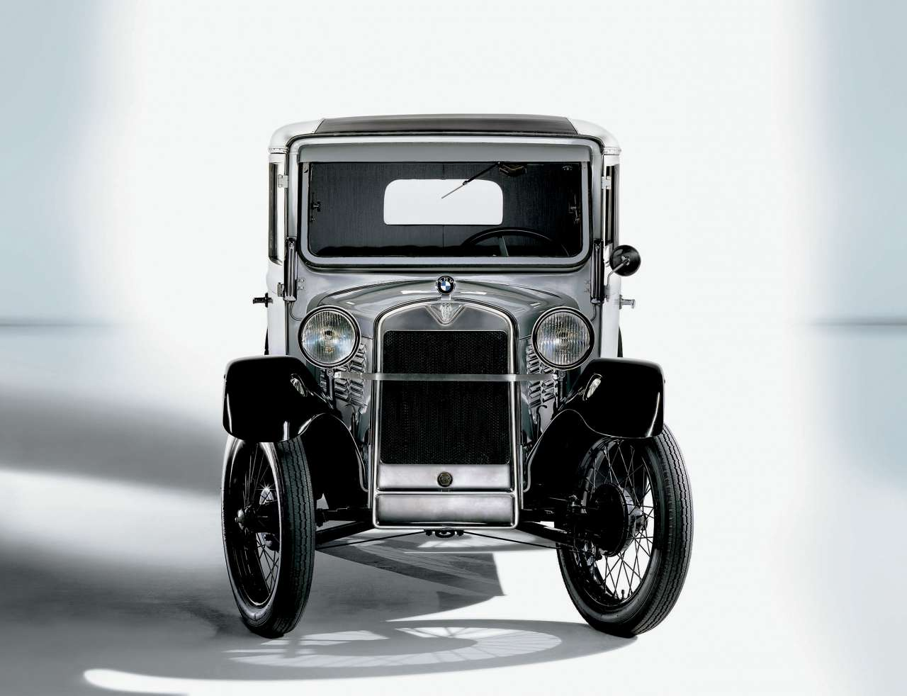

Концерн BMW є материнською фірмою (холдингом) об’єднання BMW Group, в яке входять такі окремі виробництва: мотоцикли BMW, автомобілі марок BMW, Rolls-Royce, MINI, дочірні виробництва BMW M, BMW та інші
- Перший свій автомобіль BMW випустила лише в 1932 році, що мав назву 3/15 PS. Його потужність була 20 кінських сил, а КПП з 4-ма передачами.
- Компанія опинилася у великій кризі і після Другої світової війни, коли обидва заводи були знищені. На допомогу прийшов Національний Банк Німеччини. Однак, внаслідок неправильної маркетингової політики BMW 328, а саме цей автомобіль найкраще продавався до початку військових дій, стала знову перед
- У 1954 році стає чемпіоном світу в гонках мотоциклів з колясками і утримує світову першість наступні двадцять років.
- У 1975 році з'явилася перша трійка – модель Е21, що завоювала весь світ. Як відомо, третя серія автомобілів BMW, за версією численних фільмів і музичних кліпів, стала тим автомобілем, який повинен бути у справжнього чоловіка для того, щоб йому дісталася справжня жінка.
- У 1999 році баварці стають винахідниками нового класу автомобілів – SAV (Sport Activity Vehicle - спортивний автомобіль для активного відпочинку). Першовідкривачем став BMW X5, відразу ж отримав шалену популярність, у тому числі в Україні.
- В 2013 році розпочато серійне виробництво електромобілів BMW серії I «ай».
